Understanding Roadblocks Faced by UMD Students Using Contextual Design
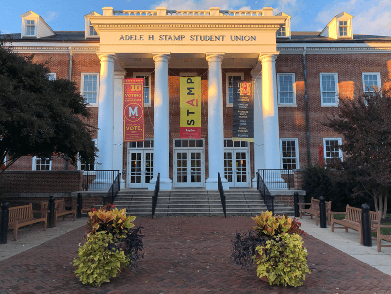
Project Details
This is the final project for the course INST710: User Experience Research Methods
Problem
The Adele H. Stamp Student Union, commonly referred to as "Stamp", is the student activity center on the campus of the University of Maryland, College Park. Each year, more than 3000 events happen in or around Stamp. We found that students found it hard to discover and keep track of events while on the other hand, the marketing team at Stamp was trying to identify ways to make their communication more effective across all channels.
We decided to conduct user research using Contextual Design to understand how students discover and track events. By employing methods like Contextual Interviews, Affinity Mapping, and Day-In-The-Life Models, we hoped to elicit insights into students' behaviors, and propose the best ways for the marketing team to engage with students.
Eva Quintos Tennant, Assistant Director of Marketing & Communications, STAMP
Background research and client meeting
Being students ourselves, we knew that keeping track of every event happening on this huge campus was a difficult task. Upon talking to our fellow students, as part of our background research, we also found out that the Stamp website was overloaded with information and it was very hard to find out about events. Initially, we had decided to focus on improving the Stamp website experience. But when we met Eva, and spoke to her in length about the problem we were trying to solve, she suggested that we should broaden our scope. Based on analytics data, we were told that not many students used the website and hence updating it was on a low priority for the marketing team. Eva said she that she would like to know more about how effective the other marketing channels were doing and what we can do to improve them to increase student engagement. Hence we decided to broaden the scope of our project to solve the larger problem of event discovery and tracking.
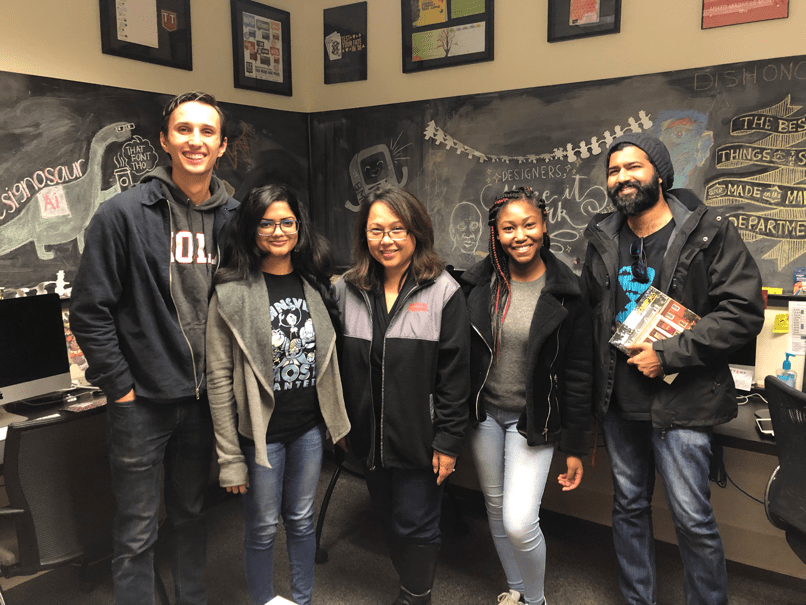
The team with our client Eva Quintos Tennant
Demographics of the interviewees
We chose eight students spanning across the following three criteria in order to get a set of interviewees that were representative of the entire student body:
Living on-campus or off-campus
Graduate or Undergraduates (Upperclassmen or Underclassmen)
International or domestic student
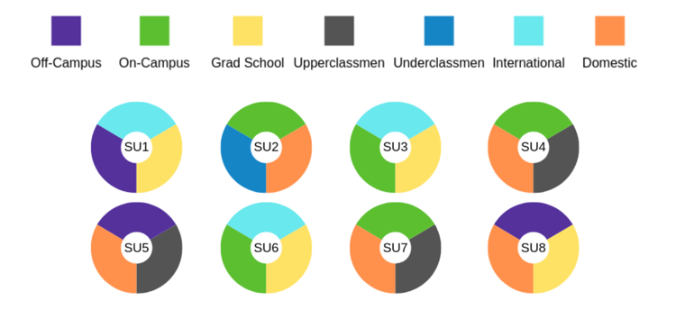
Contextual Interviews
We interviewed users following the Contextual Inquiry methodology which is a semi-structured interview method. It follows a Master-Apprentice model which means that as researchers we have to immerse ourselves in the world of the users, and discover what is important from the people who know best. We engaged the students in a conversation about their event discovery and tracking experience and, if required, asked them probing questions to get more meaningful insights. In this approach, we had to take care to not drive the narrative and leave the onus of that on the user in order to get as much data as we could.
Interview Focus:
How do students learn about upcoming events?
How do they keep track of information about upcoming events they are interested in?
What do students typically go to STAMP for?
What type of events do they attend?
What social media channels do they interact with?
Do they attend events alone or with others?
Following each interview, the team met for interpretation sessions to build a shared understanding and interpret the raw data into bite-sized meaningful insights that would be used to build our Affinity diagram. We would also use the raw data to build models to make better sense of the data.
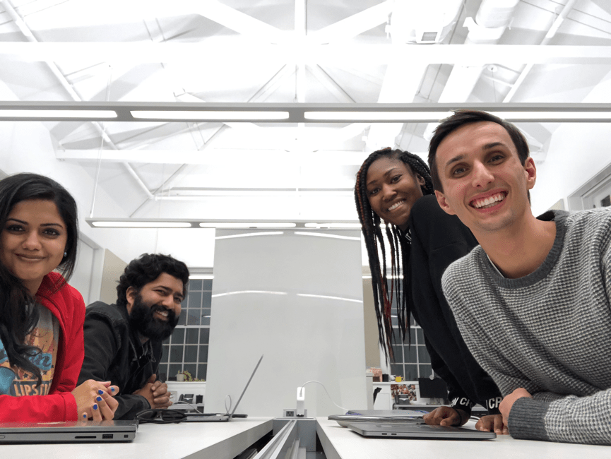
The team during one of the interpretation sessions.
Building the Affinity Diagrams
Affinity Diagrams are a good way of organizing a large amount of unstructured data. They are built from the bottom-up where we consolidate the lowest-level insights in an inductive manner to generate higher level insights. The key here was to not force the groups into categories but instead to let the groups form organically. The team had to inquire into the design significance of every note in order to glean as much insight from it as possible.
Each yellow note represents an individual insight. Logical grouping of yellow notes leads up to a blue note (1st level) which contains a higher level of insight. These blue notes are in turn grouped under pink notes (2nd level) which in-turn are grouped under green notes at the highest level (3rd level). When we read the Affinity in a top-down manner, each green note describes a whole area of concern. Each pink note under that green note describes the specific issues which define that area of concern. Each blue note describes a particular aspect of that issue and finally, all the yellow notes describe the instances illustrating that aspect.
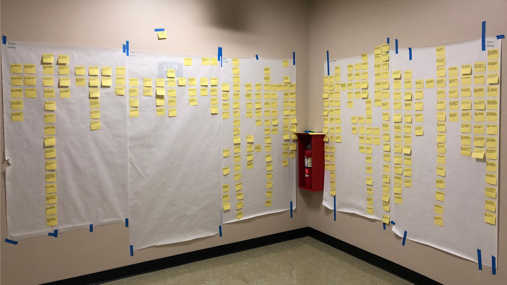
Initial groupings
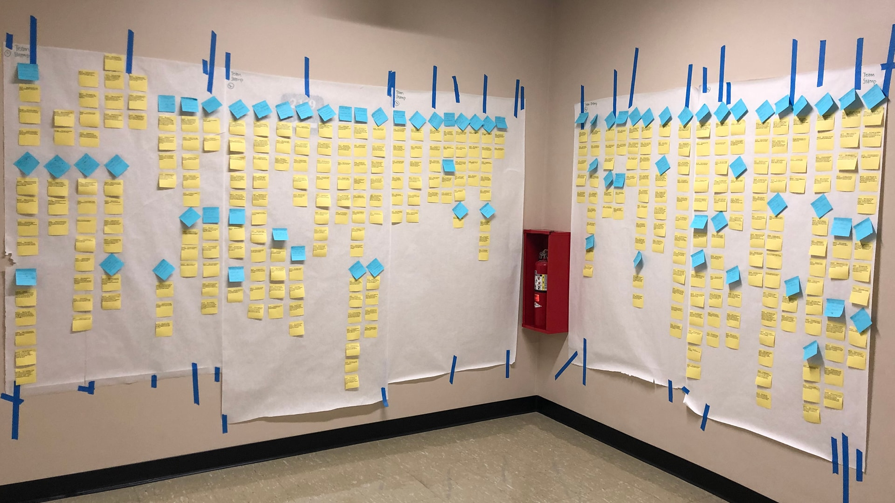
The blue groups start taking shape
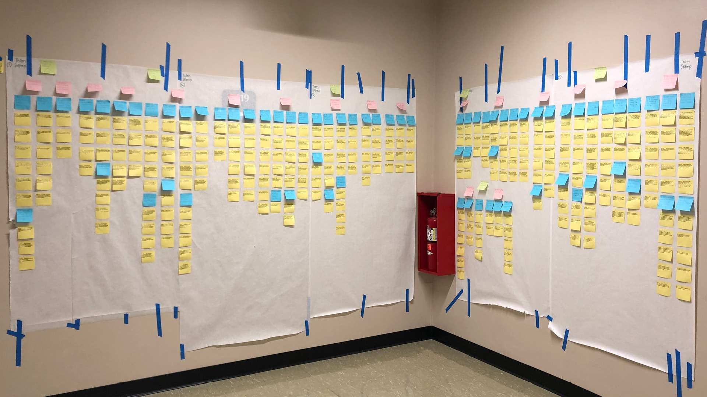
Final Affinity Diagram
Day-in-the-life model
Building a Day-In-The-Life model helped us to really understand the journey of the students as they discover, keep track of, and attend events on campus. It helped us identify the various touch points across devices, marketing channels, and places that the students interact with. It also helped us identify some identity elements so that we could classify the different kinds of students and how each behaved differently within that ecosystem.
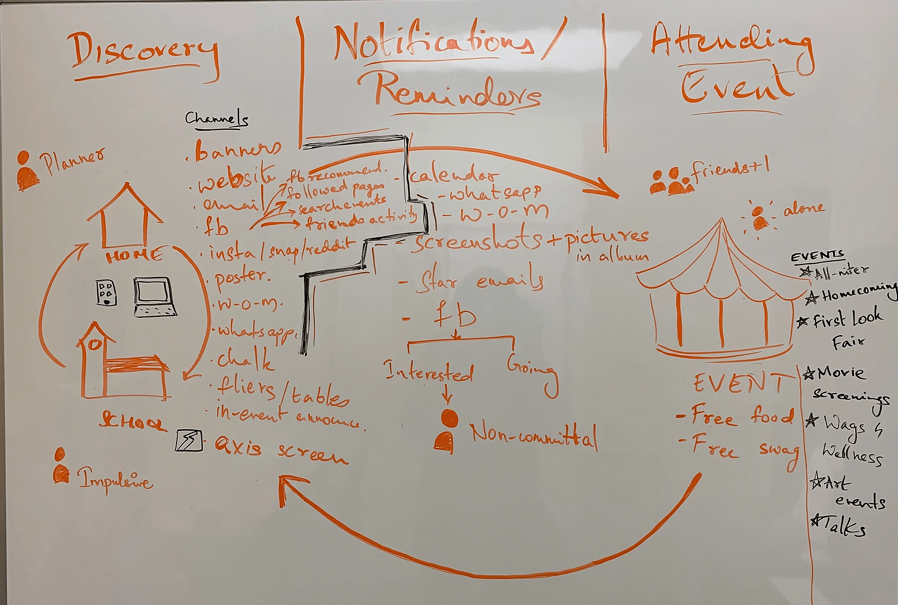
Our initial Day-In-The-Life model
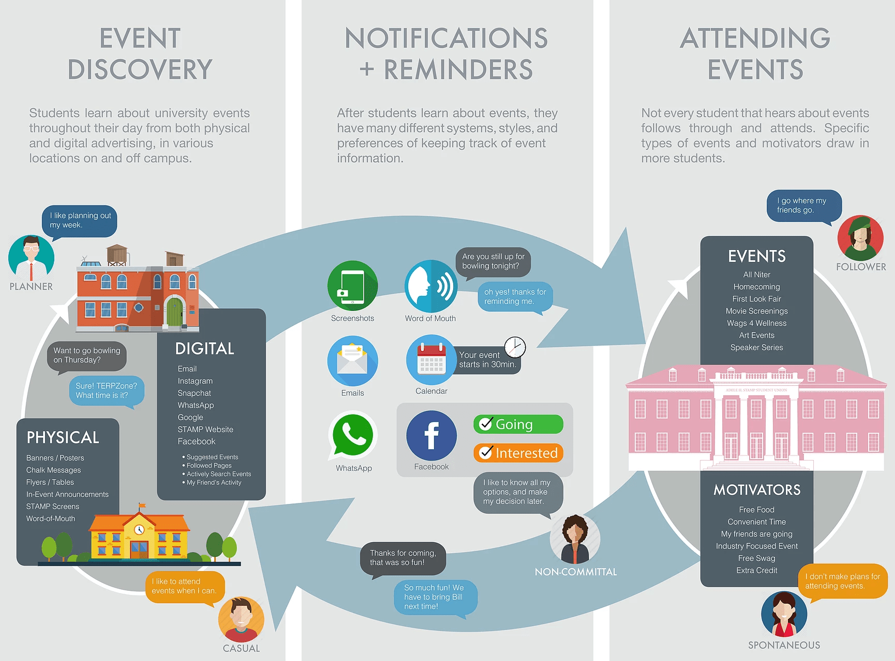
Final hi-fidelity model for client presentation. Illustrated by Dawson Hoppes
Visioning
Once the Affinity Diagram was complete, we conducted a 'Wall Walk' with each team member walking through the stories in the diagram and adding notes identifying positives, negatives and design ideas.
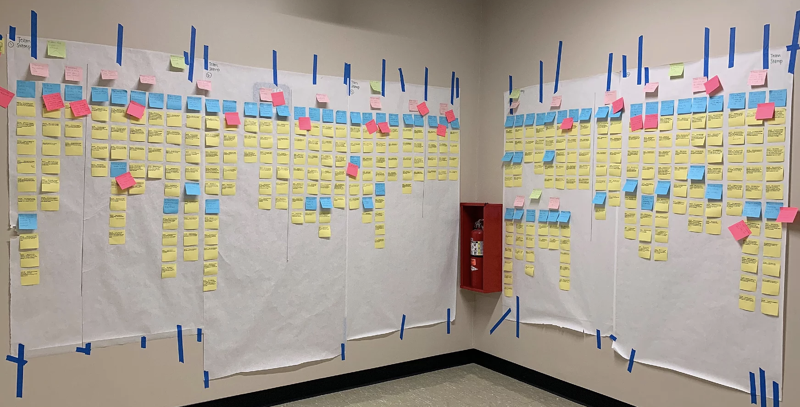
The Affinity Diagram after the 'Wall Walk'
Based on the ideas generated in this exercise, we sat down for a brainstorming session where we discussed the various problems and started visioning possible solutions on a whiteboard. This helped us to solidify the solutions in order to create hi-fidelity Product Concepts to propose to the client.
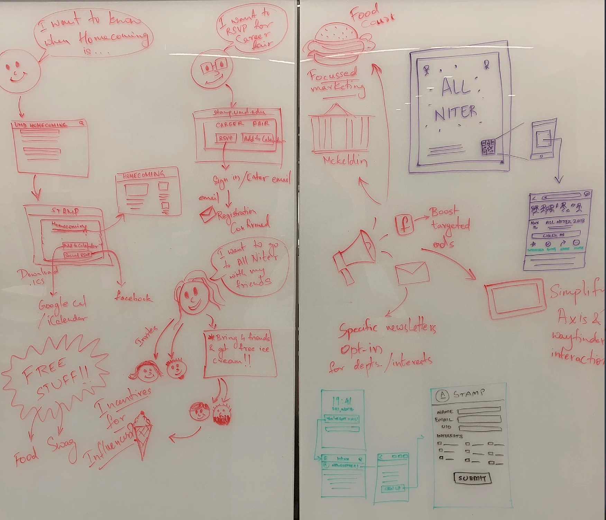
Our Vision board
Product Concepts
Add to calendar
A common complaint amongst the users was that when they would an event on the Stamp website, there was no way to easily add it to their personal calendars. They had to either manually create an entry in their calendars (which is a hassle) or take screenshots only to forget about them later. We proposed that by adding a one-touch button to add events to their personal calendar we would simplify the students' experience
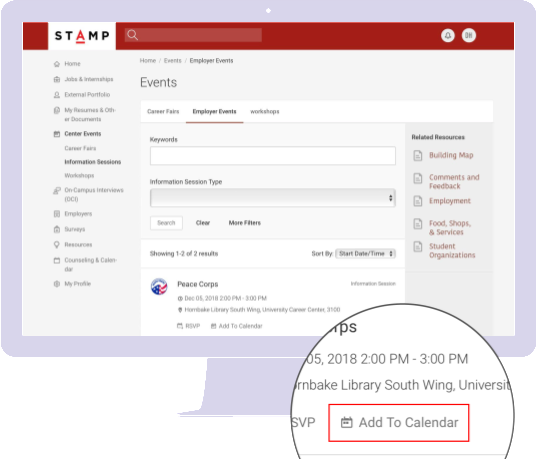
Facebook Ads
From the interviews we found that Facebook was unanimously the most popular way of discovering and following events amongst students. In fact some of the students were only using Facebook for this purpose. To capitalize on this, we suggested that the marketing team put more efforts into their Facebook marketing such as sponsored posts, ads and create event listings with as much information as possible.
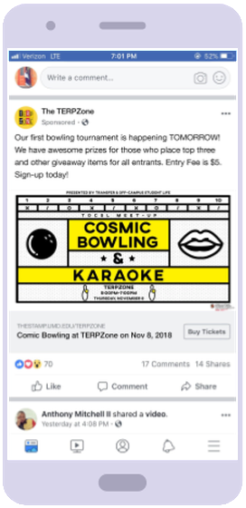
Food Court Advertising
Almost all of the students said they spend a lot of their free time in the food court situated in the Stamp building and yet we noticed that there was no marketing effort put into that space. So we suggested that the marketing team employ additional measures such as banners and signs about upcoming events.
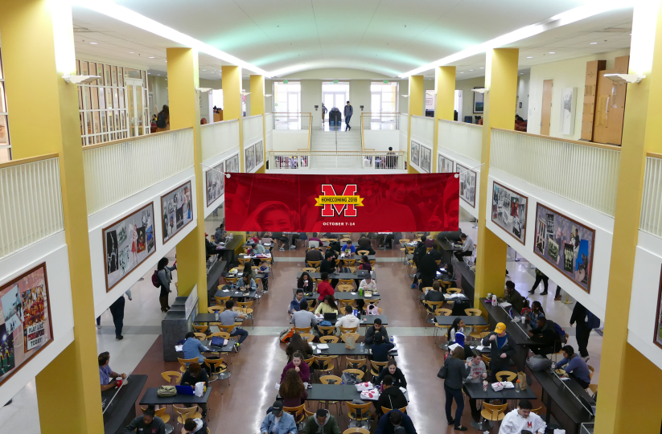
Personalised Listservs
Many of the users complained about getting overloaded with too many emails about events that weren't of interest to them. We proposed that the marketing team could send out an email at the beginning of each semester which would contain a link to a webpage where students could choose what category of events they were interested in and henceforth receive emails for only those categories
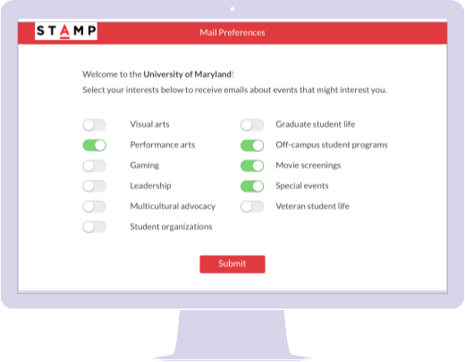
QR Codes in Posters
The students said they found posters very engaging but the only way for them to retain information about the event was to click a picture of the poster. Later they would forget all about it or struggle to find the picture in their gallery among all their other photos. We proposed that the team could add a qr code to every poster which would contain the link to the event's Facebook page so that students could mark it there for future reference.
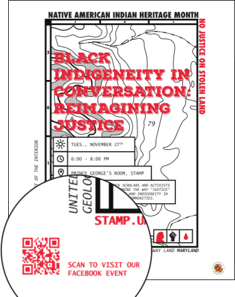
Conclusion
We met with Eva and the coordinators of Marketing and Design to present our data, findings and product concepts. They told us that they found our research to be very useful and that it helped them uncover a lot about students' behaviors that they had not known previously. As a next step, they said they would discuss the findings with senior management as well as the other Heads of departments at Stamp in order to discuss the feasibility of implementing our proposed solutions.